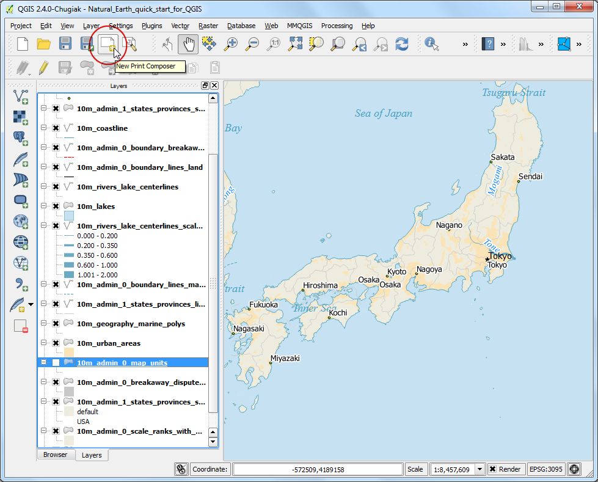
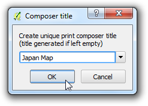
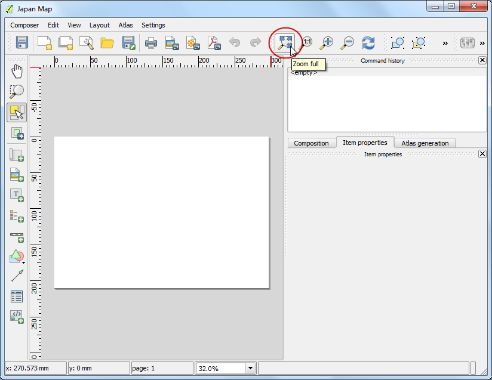
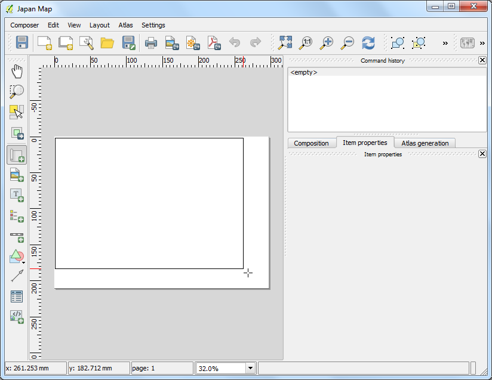
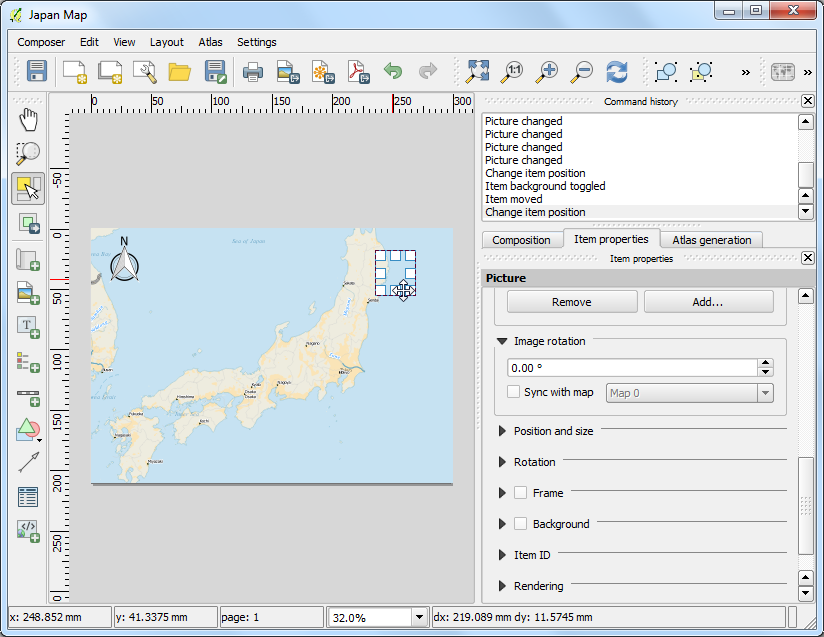
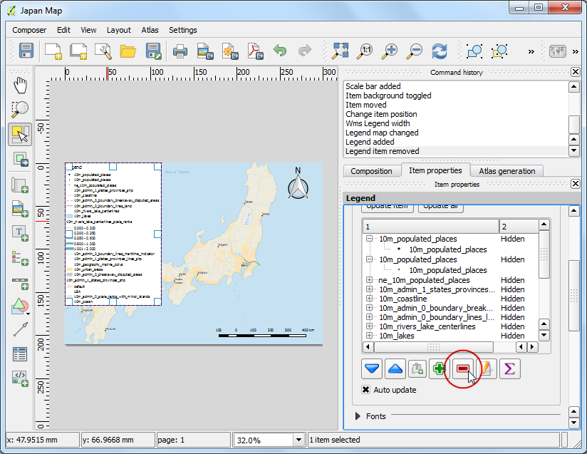
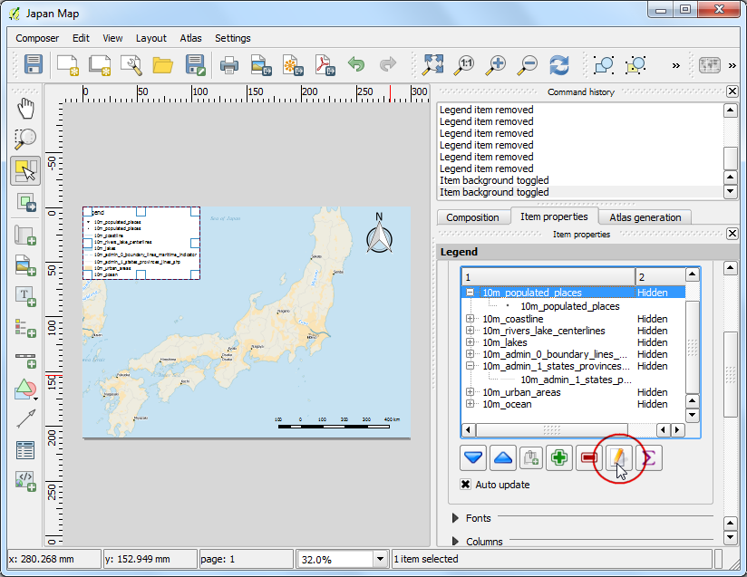
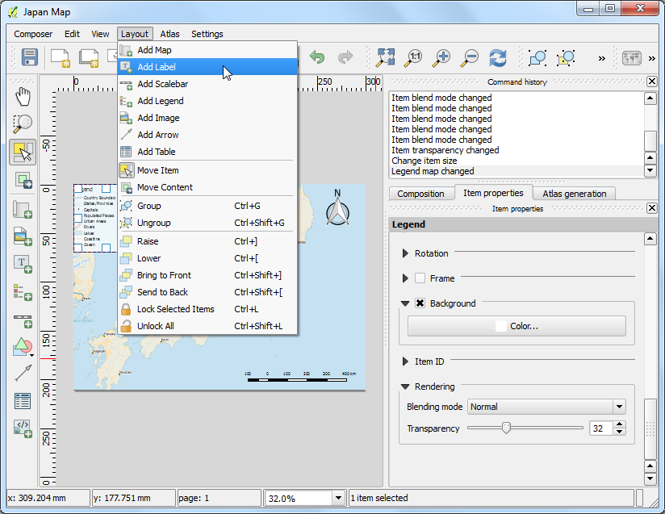

Making a Map
[ Download PDF A4 Letter ]
Often one needs to create a map that can be printed or published. QGIS has a powerful tool called Print Composer that allows you to take your GIS layers and package them to create maps.
Overview of the task
The tutorial shows how to create a map of Japan with standard map elements like north arrow, scale bar, legend and label.
Get the data
We will use the Natural Earth dataset - specifically the Natural Earth Quick Start Kit that comes with beautifully styled global layers that can be loaded directly to QGIS.
Download the Natural Earth Quickstart Kit.
Data Source [NATURALEARTH]
Procedure
- Download and extract the Natural Earth Quick Start Kit data. Open QGIS. Click on .

- Browse to the directory when you had extracted the natural earth data. You should see a file named Natural_Earth_quick_start_for_QGIS.qgs. This is the project file that contains styled layers in QGIS Document format. Click Open.

- You would see a lot of layers in the table of content and a styled world map in the QGIS canvas. If you see errors displayed at the top of the canvas, click on the cross to close it.

- In this tutorial, we will make a map of Japan. Click the Zoom In button and draw a rectangle around Japan to zoom to the area.

- Before we make a map suitable for printing, we need to choose an appropriate
projection. This dataset comes in Geographic Coordinate System (GCS) where
the units are degrees. This is not appropriate for a map where you want the
distances to be in kilometers or miles. We need to use a Projected Coordinate
System that minimizes distortions for our region of interest and has units
in meters. Universal Transverse Mercator (UTM) is a decent choice for a
projected coordinate system. It is also global, so it’s a good default that
you can rely on and choose a UTM zone that contains your area of interest
to minimize distortions for your region. In our case, we will use UTM Zone
54N. Click the CRS Status button at the bottom-right of the QGIS
window.
Note
For Japan, Japan Plane Rectangular CS is a projected coordinate reference
system (CRS) that is designed for minimum distortions. It is divided in 18
zones and if you are working for a smaller region in Japan, using this CRS
will be better.

- Check the Enable on-the-fly CRS Transformation box. Type Tokyo
utm zone54n in the Filter search box. Once you see the
results, select Tokyo / UTM Zone 54N - EPSG:3095. Click
Apply.

- Zoom and Pan to keep Japan at the center of your map canvas. At this point,
you can check the box next to 10m_admin_0_map_units layer to turn off
the labels from that layer.

- Once you are centered around the area of interest, click on the
New Print Composer button. It is also accessible by
.

- You will be prompted to enter a title for the composer. Enter ‘Japan map’
and click Ok.

- In the Print Composer window, click on Zoom full to display the
full extent of the Layout.

- Now we would have to bring the map view that we see in the QGIS Canvas to
this layer. Click on the Add Map button. This tool can also be
access from .

- Once the Add Map button is active, hold the left mouse button
and drag a rectangle where you want to insert the map.

- You will see that the rectangle window will be rendered with the map from
the main QGIS canvas. Since we want our map to be covering the full extent
of the layout, drag the corners of the rectangle to the edges.

- The rendered map may not be covering the full extent of our interest area.
Click the Move item content button to pan the map in the window
and center it in the composer.

- Let us adjust the zoom level for the given map. Click on the
Item Properties tab and enter 5000000 for Scale
value.

- Now we will add a North Arrow to the map. Print Composer comes with a nice
collection of map-related images - including many types of North Arrows.
Click .

- Holding your left mouse button, draw a rectangle on the top-right corner of
the map canvas. On the right-hand panel, click on the
Item Properties tab and expand the
Search directories section and select the North Arrow image of
your liking.

- Next, scroll down below and un-check the Background option.
This will make the image transparent.

- You can drag the North Arrow and move it around in the composer window to a
suitable position.

- Now we will add a scale bar. Click on
.

- Click on the layout where you want the scalebar to appear.
From the Item Properties tab, choose the Style that fit your
requirement. You should also set the transparency by un-cecking the
Background option.

- Now we will add a legend to the map. Click on
.

- Click on the layout where you want the legend to appear. Since our layer
list is huge, you will see a big box with all the layers appear. Click on
the Item Properties tab and select the layers which we do not
want in the legend. Click the - button to remove it from the
legend.

- For the purpose of this map, we will keep legend information only for the
five layers as seen below.

- Click on the Edit button and change the display text for the
legend items to be more readable.

- Now time to label our map. Click on .

- Click on the map and draw a box where the label should be. In the
Item Properties tab, expand the Label section and
enter the text as shown below. We can enter the text as HTML as well.
Check the box Render as Html so the composer will interpret the
HTML tags.
<div align=center>
<h1>Map of Japan</h1>
<p>Created using Natural Earth data in QGIS</p>
</div>

- Once you are satisfied with the map, you can export it as Image, PDF or
SVG. For this tutorial, let’s export it as an image. Click
.

- Save the image in the format of your liking. Below is the exported PNG
image.